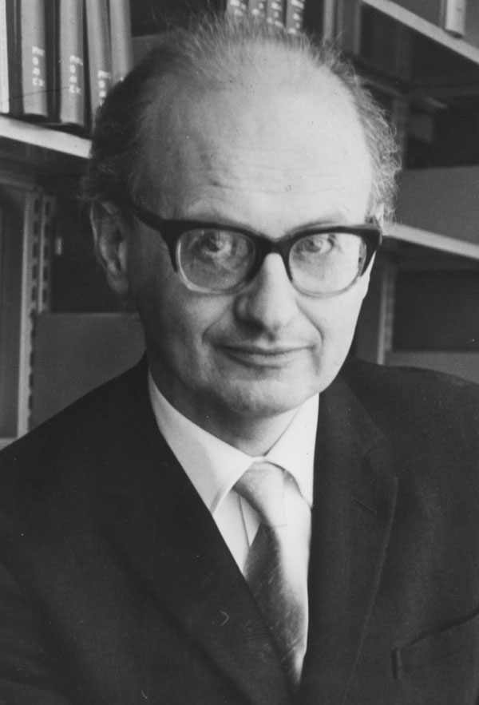

1. El problema con Popper
Popper tenía razón en un punto crucial: la inducción no puede justificarse lógicamente. Pero su solución —el falsacionismo— chocó con la historia real de la ciencia. Si los científicos hubieran seguido estrictamente la regla de Popper (abandonar cualquier teoría que encuentre una anomalía), las mejores teorías de la historia habrían sido descartadas antes de tiempo.
Cuando Newton publicó su mecánica, ya había anomalías conocidas que no podía explicar. Si Popper hubiera estado ahí, Newton habría tenido que abandonar su propia teoría el día que la publicó. Sin embargo, la mecánica newtoniana funcionó brillantemente durante más de doscientos años.
El punto de partida de Lakatos —y de Feyerabend— es que el falsacionismo de Popper describe cómo debería funcionar la ciencia según una lógica idealizada, pero no cómo funciona realmente. Y esa brecha entre el modelo y la práctica real exige una respuesta filosófica más sofisticada.
El ejemplo más claro: la órbita de Urano no coincidía con lo que predecía Newton. Los astrónomos del siglo XIX no tiraron a Newton a la basura. En cambio, Adams y Le Verrier propusieron que había un planeta desconocido que perturbaba la órbita. Tenían razón: era Neptuno. Una anomalía se convirtió en un descubrimiento. Eso no es falsacionismo: es lo que Lakatos llamará un programa de investigación progresivo.
2. Lakatos: Los Programas de Investigación Científica

Imre Lakatos
Nacido Imre Lipsitz en Hungría, sobrevivió al nazismo y estudió matemática y filosofía en Budapest. Tras la Revolución Húngara de 1956 emigró a Occidente, donde se doctoró en Cambridge bajo la influencia de Popper. Fue profesor en la London School of Economics hasta su muerte repentina a los 51 años.
Su obra central, La metodología de los programas de investigación científica (1978, póstuma), propone que la ciencia avanza a través de programas de investigación —estructuras colectivas con un núcleo firme protegido por hipótesis auxiliares—, superando el falsacionismo simplista de Popper sin caer en el relativismo de Feyerabend.
Imre Lakatos, discípulo y crítico de Popper, propuso en 1970 una imagen radicalmente distinta de cómo funciona la ciencia. La unidad básica no es la hipótesis aislada que se falsifica o no: es el programa de investigación científica, una estructura colectiva y temporal que los científicos construyen y defienden durante años o décadas.
"La historia de la ciencia es la historia de la competencia entre programas de investigación rivales, no la historia de hipótesis individuales que se falsifican."
— Imre Lakatos, La Metodología de los Programas de Investigación Científica (1978)Para Lakatos, los científicos no trabajan con hipótesis sueltas sino con familias de teorías interconectadas. Cuando aparece una anomalía, no abandonan todo el programa: modifican las hipótesis auxiliares del borde mientras protegen el núcleo central de la teoría.
La gran diferencia con Popper: Popper pregunta "¿es esta hipótesis falsable?" Lakatos pregunta "¿este programa de investigación es progresivo o degenerativo?" Son preguntas completamente distintas que llevan a evaluaciones distintas de la ciencia.
3. La estructura de un programa de investigación
Todo programa de investigación tiene tres componentes esenciales. Hacé clic en cada uno en el diagrama para explorarlos:
Seleccioná una zona del diagrama
Hacé clic en el núcleo (rojo), la heurística (amarillo) o el cinturón protector (verde) para ver su descripción.
¿Cuándo abandonar un programa?
Lakatos distingue programas progresivos (que generan nuevas predicciones confirmadas, que descubren hechos nuevos) de programas degenerativos (que solo modifican el cinturón para explicar anomalías ya conocidas, sin predecir nada nuevo). Un programa se abandona no ante una sola refutación, sino cuando un programa rival progresivo lo supera.
4. Feyerabend: Contra el Método
Si Lakatos reformuló a Popper, Paul Feyerabend dinamitó toda la tradición. En su obra Contra el Método (1975), Feyerabend argumentó que no existe ni puede existir un método científico universal. Cualquier regla metodológica que se proponga —incluyendo las de Popper y Lakatos— ha sido violada en algún momento por los científicos más exitosos de la historia.
"La ciencia es esencialmente una empresa anárquica: el anarquismo teórico es más humanitario y estimulante del progreso que sus alternativas basadas en el orden y la ley."
— Paul Feyerabend, Contra el Método (1975)La posición de Feyerabend se resume en tres palabras: anything goes ("todo vale"). No como una invitación al caos, sino como una descripción histórica: cuando se examina cómo se produjeron realmente los grandes descubrimientos científicos, se encuentra que los científicos usaron todos los recursos disponibles —intuición, metáfora, argumentos retóricos, incluso engaño— y violaron sistemáticamente las reglas metodológicas que se suponía que debían seguir.
No hay ninguna regla metodológica que no haya sido violada en algún momento decisivo de la historia de la ciencia. El progreso científico requirió siempre la transgresión de las reglas vigentes.
El conocimiento crece cuando hay muchas teorías rivales compitiendo al mismo tiempo, incluso si parecen incompatibles. La competencia entre hipótesis alternativas es más fértil que la búsqueda de un método único.
La ciencia no debería tener el monopolio del conocimiento. El Estado no debería financiar solo ciencia "oficial". Las tradiciones alternativas (medicina popular, cosmovisiones indígenas) merecen igual respeto institucional.
Los paradigmas rivales no solo difieren en sus afirmaciones empíricas: difieren en sus conceptos, en lo que cuenta como "observación", en los problemas que se plantean. No hay árbitro neutral entre ellos.
Galileo no venció al geocentrismo gracias a una metodología impecable. Usó argumentos retóricos en lugar de lógicos, ignoró anomalías que contradeckin su propio sistema, y apoyó sus observaciones telescópicas con una teoría de la óptica que todavía no estaba bien fundamentada. Triunfó en parte por su habilidad para la propaganda científica. Eso no invalida sus resultados, pero muestra que ningún método garantiza el éxito.
5. Los tres en perspectiva
Popper, Lakatos y Feyerabend comparten el punto de partida —el problema de la inducción y la crítica al verificacionismo— pero llegan a conclusiones radicalmente distintas. Compará:
Popper
- Unidad: la hipótesis individual
- Criterio: falsabilidad
- Método: conjeturas y refutaciones
- Abandono: ante la primera refutación
- Ideal: ciencia como proceso racional, acumulativo de refutaciones
- Límite: los científicos reales no operan así
Lakatos
- Unidad: el programa de investigación
- Criterio: progresivo vs. degenerativo
- Método: proteger el núcleo, modificar el cinturón
- Abandono: cuando un rival progresivo lo supera
- Ideal: racionalidad histórica, evaluable a posteriori
- Límite: ¿cuándo un programa es "realmente" degenerativo?
Feyerabend
- Unidad: no hay unidad fija
- Criterio: ninguno universal
- Método: todo vale — anything goes
- Abandono: no hay regla
- Ideal: ciencia pluralista, sin monopolio del conocimiento
- Límite: ¿puede haber conocimiento sin ninguna norma?
| Dimensión | Popper | Lakatos | Feyerabend |
|---|---|---|---|
| ¿Qué se evalúa? | La hipótesis | El programa | Nada en particular |
| ¿Cuándo abandonar? | Ante una refutación | Cuando un rival progresivo lo supera | No hay regla |
| ¿Es la ciencia racional? | Sí, deductivamente | Sí, históricamente | No más que otras formas de conocimiento |
| ¿Hay anomalías tolerables? | No — una basta | Sí, protegidas por el cinturón | Todo es tolerable |
| Relación con la historia | Prescriptiva (deber ser) | Reconstructiva (fue así) | Descriptiva y crítica |
6. Síntesis: cierre de la Unidad 3
El inductivismo y su promesa incumplida (Bacon · Hume)
La imagen más intuitiva del científico: observar, acumular datos, generalizar. Hume mostró que ese salto —de lo observado a lo universal— no tiene justificación lógica. El problema de la inducción no tiene solución directa. Toda la discusión posterior es una respuesta a Hume.
El Método Hipotético-Deductivo (Hempel)
La inversión metodológica: primero la hipótesis, luego la deducción de consecuencias, luego la contrastación. El problema: el modus ponens (confirmar) no prueba; solo el modus tollens (refutar) es concluyente. Base lógica para el falsacionismo.
El Falsacionismo (Popper)
Eliminar la inducción del método científico. Las teorías no se prueban: se corroboran provisionalmente o se refutan definitivamente. El criterio de demarcación: una teoría es científica si y solo si es falsable. Límite: demasiado rígido para describir la ciencia real.
Los Programas de Investigación (Lakatos)
La ciencia trabaja con programas, no con hipótesis aisladas. El núcleo firme protegido por la heurística negativa; el cinturón protector que absorbe anomalías. La evaluación no es instantánea sino histórica: progresivo o degenerativo. Salva la racionalidad de la ciencia sin caer en el falsacionismo ingenuo.
El Anarquismo Metodológico (Feyerabend)
Ninguna regla metodológica es universal ni necesaria. Los grandes avances científicos siempre transgredieron las reglas vigentes. "Anything goes" no es nihilismo: es una descripción histórica y una defensa del pluralismo epistemológico. La ciencia no es la única forma legítima de conocimiento.
La pregunta que queda abierta: Si la ciencia no tiene un método único que garantice el conocimiento, ¿qué es lo que la distingue de otras formas de saber? ¿Su capacidad predictiva? ¿Su coherencia interna? ¿Sus instituciones? ¿Su historia de éxitos? Esta pregunta conecta directamente con los temas de las unidades siguientes: la relación entre ciencia, sociedad, poder y valores.
Preguntas para el debate
Según Lakatos, el núcleo firme de un programa nunca debe tocarse. Pero, ¿qué pasa cuando hay que cambiar ese núcleo? ¿Cómo llamaría Lakatos a eso? ¿Coincide con lo que Kuhn llamó "revolución científica"?
Feyerabend dice que "anything goes" y que la ciencia no es superior a otras formas de conocimiento. ¿Están de acuerdo? ¿La medicina popular, la astrología o las cosmovisiones indígenas merecen el mismo estatus que la física cuántica? ¿Por qué sí o por qué no?
Durante la dictadura argentina (1976–1983), algunos científicos pusieron su conocimiento al servicio del terrorismo de Estado. ¿Qué diría Popper sobre eso? ¿Y Feyerabend? ¿La ciencia tiene responsabilidad moral por sus usos?
Comparando con lo que vieron en la Unidad 1 (Kuhn), ¿cuál les parece la mejor descripción de cómo funciona realmente la ciencia: los paradigmas de Kuhn o los programas de investigación de Lakatos? Justificá con algún ejemplo histórico.